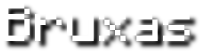

Os zumbis gemem quando vagueiam sem rumo, mas rosnam enquanto atacam
ou são atacados. Os zumbis aparecem em grupos de 4 indivíduos e perseguirão
lentamente o o jogador quando o avistarem, num raio de 40 blocos, infligindo
os dano ao tocar. Como o esqueleto, o zumbi queimará quando exposto à luz solar.
Esqueletos perseguem jogadores e golem de ferros que veem dentro de 16 blocos,
subindo escadas, navegando em labirintos e atravessando outros obstáculos complexos
para chegar ao alcance de tiro. Eles podem subir escadas de mão se forem forçados a
fazê-lo. Quando a 15 blocos de um alvo, com uma linha de visão clara, eles começam a
atirar com flechas, uma vez a cada segundo. Se o jogador sair do raio de 15 blocos,

Creepers perseguem qualquer jogador dentro de um raio de 16 blocos e mais 4 blocos
verticalmente. O alcance de detecção de creepers é reduzido para 8 blocos quando o jogador
está usando uma cabeça de criatura de creeper.
Quando a três blocos de um jogador, um creeper para de se mover, assobia,
pisca e se expande, depois explode após 1,5 segundos.
As aranhas podem subir pelas paredes e outros obstáculos. Se uma aranha não consegue
encontrar um caminho ideal para o jogador,
ela vai ficar tão próximo quanto possível para a posição do jogador a
partir do exterior, mesmo se ele perder sua agressividade. Quando uma aranha
perde sua agressão sobre o jogador, ele vai continuar a caminhar cegamente por cerca de
dois segundos.

Apesar de ter uma aparência semelhante aos aldeões,
as bruxas não podem abrir portas ou utilizar caldeirões.
As bruxas perseguem os jogadores dentro de 64 blocos.
Eles usam poções em combate, lançando poções arremessáveis
ofensivamente e bebendo poções normais defensivamente.
Essas poções são as mesmas que podem ser obtidas por
meio da fermentação, ou seja, elas têm a mesma potência e duração.
Um enderman pode ser provocado por qualquer jogador ou
criatura que o atacar. Eles também podem ser provocados
por jogadores que olharem em seus olhos e depois pararem
de olhar em até 64 blocos deles. Os endermans abrem suas bocas
e começam a tremer furiosamente se forem provocados; eles também
produzem sons altos e longos ao serem olhados fixamente. Se o jogador
manter o contato olho a olho, o enderman não se moverá, no entanto ele
pode teletransportar-se. Assim que o jogador parar de olhar para o enderman,
ele correrá em direção às costas do jogador para atacar,

Os slimes se movem pulando, o que eles fazem a cada 10 a 30 tiques,
e pode nadar na água e subir escadas. Diferente de outras criaturas,
os slimes continuam se movendo quando não há jogadores por perto. Sua
rotina exata é a seguinte:
O slime procura por um jogador dentro de uma distância de 16 blocos.
Eles podem ver até através de blocos.

Os blazes voam, mas quando não estão atacando ficam no
chão ou descem lentamente pelo ar. Os blazes tentam nadar
para cima na lava ou na água. Quando parados, eles caem através
da lava e da água. Apesar de sofrerem danos em contato com água,
os blazes não tentam se proteger se forem empurrados ou jogados na água.
Seu mecanismo de procurar caminhos não evita o fogo ou a lava
mas evita a água. Eles sofrem 5 coração de dano de congelamento na neve fofa.
Como muito dos outros monstros do Nether, cubos de magma não podem se queimar
e não são retardados ou danificados pela lava. Em vez disso, parecem nadar para
cima rapidamente na lava e conseguem saltitar sobre sua superfície. Eles não podem
ser feridos por dano de queda nem se afogam, tendo a capacidade de nado na água.
Nas versões anteriores a 1.13 eles não podiam nadar e se afogariam.

Piglin-zumbi se movem relativamente devagar. Eles podem se afogar,
mas são imunes a dano por fogo e lava. Piglin-zumbi crianças são mais
rápidos que piglin-zumbi adultos.
Assim como zumbis, alguns piglin-zumbi baterão em portas de madeira e,
no Difícil, até as quebrarão.
Alguns piglin-zumbi têm a habilidade de pegar itens. Eles inclusive pegarão
armas se acreditarem serem melhores que suas espadas de ouro, as dropando com a
mesma chance que se mortos com Looting.
Golens de ferro vagam por uma vila em forma de patrulha, ficando perto das bordas
de edifícios e outras estruturas. Como aldeão, golens de ferro não se afastam de
uma aldeia, independentemente de como foram gerados. Um golem de ferro às vezes
enfrenta um aldeão como se estivessem falando um com o outro. Golens de ferro são
capazes de gerar papoulas em suas mãos e oferecê-los aos aldeões, simbolizando a
relação amigável entre os aldeões e os golens.

Quando invocado, o wither aumenta de tamanho à medida que sua barra de saúde se enche.
Nesse estado, o wither é invulnerável e não se move nem ataca. Quando este estado termina
(após 10 segundos), o wither cria uma grande explosão centrada em si mesmo, destruindo
os blocos próximos e causando até 49.5 de dano a criaturas/jogadores próximos.
O wither tem 3 cabeças que jogam bolas de fogo.

O dragão ender tem uma barra de saúde roxa clara que aparece na parte superior da
tela do jogador. A sua saúde é frequentemente restaurada por cristais do end próximos,
indicados por um raio branco mágico conectando o dragão e o cristal. Destruir um cristal
do end que está curando ativamente o dragão causa 10 de dano.